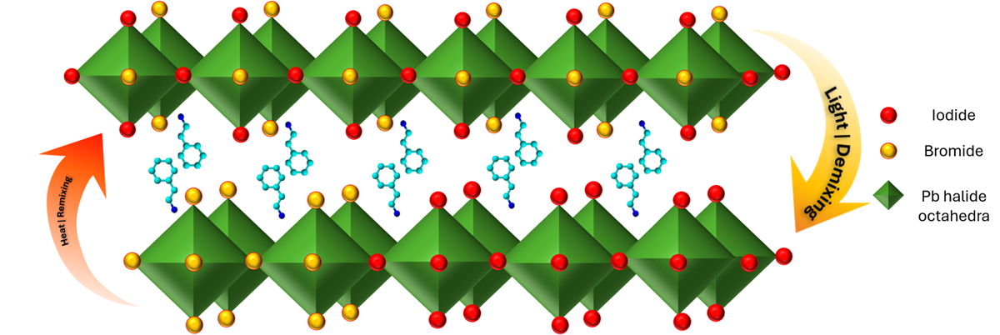
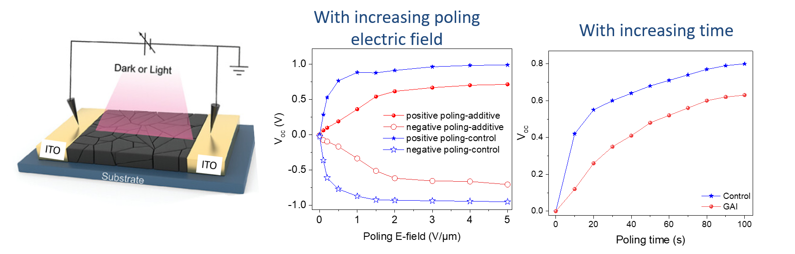
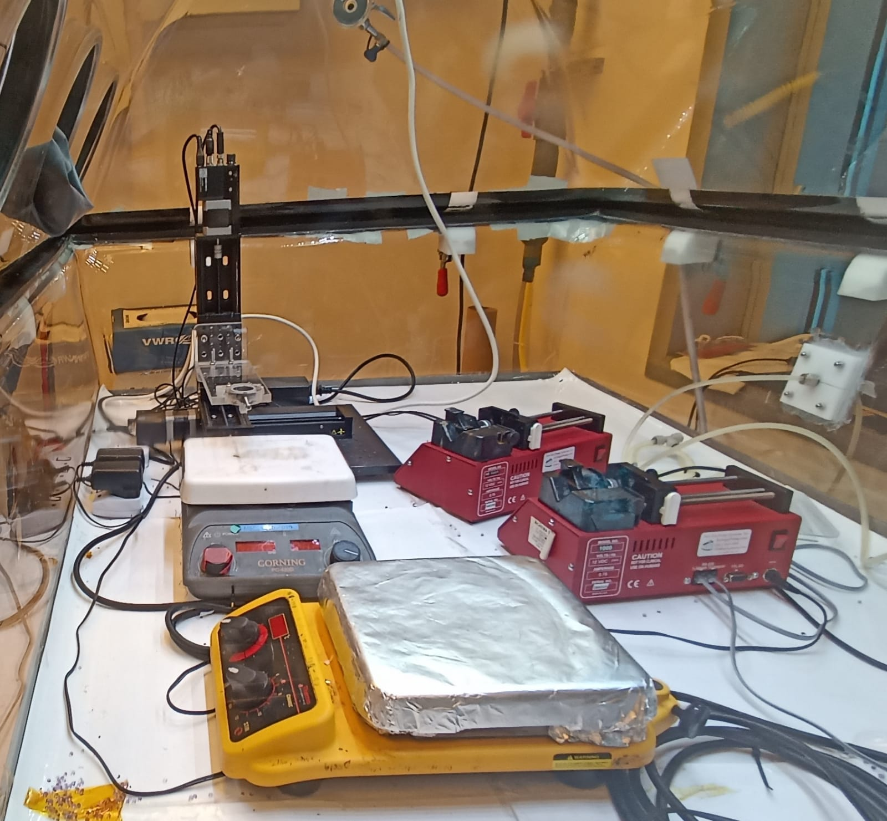
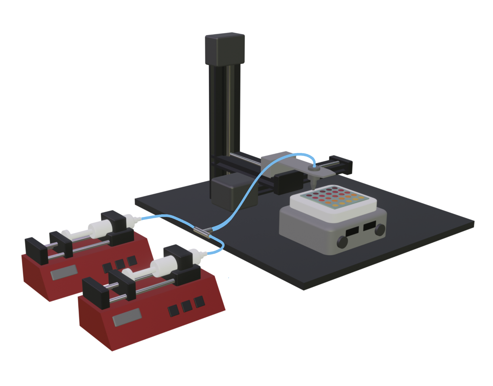
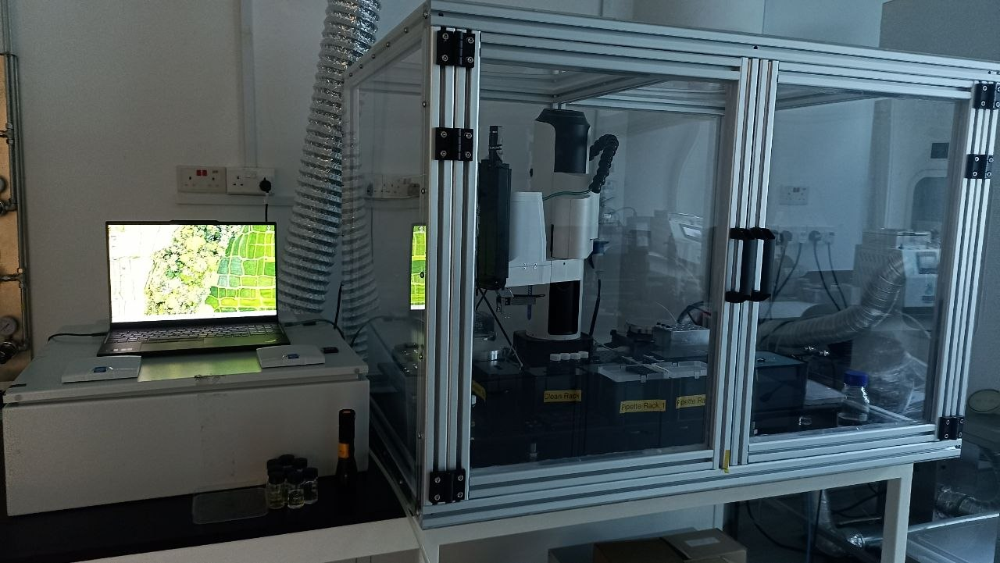
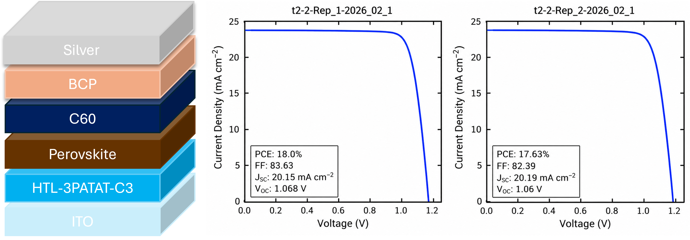
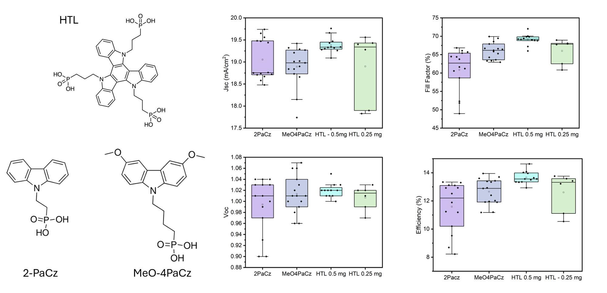

Fabricating and characterising semiconductor materials; thin-film process & device optimisation
Saumya Sebastian — PhD in Materials Science & Engineering, NTU Singapore. Hands-on experience spanning semiconductor thin-film processing, device fabrication, metrology, automated experimentation, equipment commissioning and Python-driven data analysis.
Tuning ionic migration in perovskite using additives and spacer cations for device applications
My PhD research investigated light-induced phase segregation and ionic migration in mixed-halide perovskite semiconductors, and translated the results to device applications.
The problem
Mixed-halide perovskites can segregate into iodide- and bromide-rich domains under illumination, creating optical and device instability. The research focused on understanding and modulating this behaviour.Two themes were investigated.
- Influence of additives in modulating phase segregation and their translation to device applications.
- Effect of spacer cation and the resulting 2-D perovskite structure in regulating light induced phase segregation.


Device translation
Translated material-level ionic behaviour modulated by additives into switchable photovoltaic and lateral memristive device measurements.
Structure → property (Root Cause Analysis)
Linked spacer-cation structure, packing, disorder and defect characteristics to ionic migration and phase-segregation behaviour.
Optical metrology
Used PL, absorbance, XRD, FTIR, GIWAXS and TRPL to track composition, structure and phase segregation tendency.
Automated experimentation
Set up and operated automated experimental platforms within glovebox environments for high-throughput perovskite research and device fabrication.
Automated thin-film processing
Commissioned, calibrated and maintained automated platforms for solution handling and thin-film processing inside glovebox environments, including troubleshooting of system failures.


High-throughput composition mapping
Developed an automated drop-casting platform and workflows for generating MAPb(BrxI1−x)3 compositional gradients and rapidly screening optical stability.

Hardware × software
Integrated experimental hardware, GUI workflows and data acquisition to connect automated instruments with structured experimental data.
Device fabrication and thin-film processing

Automated experimentation

Optimisation
- Efficiency optimisation of wide-bandgap perovskite solar cells.
- Tuning of material parameters and processing conditions
Selected research publications.
Research spanning semiconductor materials, automated experimentation, device optimization.
Additive Screening for Suppressing Light-Induced Phase Segregation and Ionic Activity in Halide Perovskite Devices
Investigated additive-driven control of ionic activity and light-induced phase segregation in mixed-halide perovskites along with device-level validation.
View publication ↗Machine-Learning-Driven in-Device Optimization of All-Printed Perovskite Solar Cells
Research combining machine learning and in-device optimization for improving the performance of all-printed perovskite solar cells.
An Object-Oriented Framework to Enable Workflow Evolution Across Materials Acceleration Platforms
Development of an object-oriented framework enabling flexible workflow evolution across materials acceleration platforms.
Technical Skillsets
A combination of hands-on semiconductor processing, metrology, device fabrication, automation and data-driven optimization.
Semiconductor processing
PVD / thermal evaporation · spin coating · glovebox operations · semiconductor device fabrication · process-property optimization
Metrology & characterization
SEM · AFM · GIWAXS · XRD · FTIR · PL · UV–Vis · TRPL · profilometry · contact angle · TGA · XPS · Galvanostatic measurement · I-V characteristics
Equipment & automation
Commissioning · calibration · troubleshooting · automated experimentation · hardware–software integration · GUI development using LLM applications
Data & process engineering
Python · machine learning · DOE · statistical analysis · SPC · FMEA · root-cause analysis · JMP · Origin · MS-Office
Let’s connect.
Open to opportunities in semiconductor process development, technology development, metrology, materials and R&D.
Saumya Sebastian, PhD
Materials Science & Engineering
Nanyang Technological University, Singapore